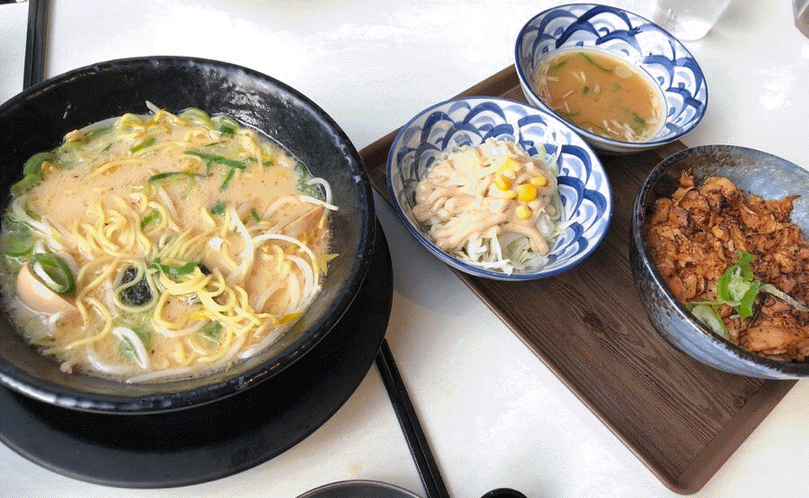

갑자기 페북에 산쪼메가 뜨길래 보고 넘나 맛있어보여서 산쪼메에 가봤어요ㅎㅎㅎ 안에는 귀여운 인테리어가 눈에 띄었어요. 저는 돈코츠라멘과 규동을 시켰어요. 두그두그두그 (음식 나온는 소리ㅎㅎ) 라면에는 윤기가 좔좔 흐르고 위에 고기가 얹어져있었는데 정말 맛있어요ㅋㅋㅋ 다음에 또 먹고싶당ㅎㅎ 국물이 정말 사골을 몇번 우린듯한 찐한 국물이라 한모금 먹을때마다 보약먹는 느낌이였어용 국물 안남기고 다 먹었담니다.ㅎㅎ 규동도 정말 맛있었어요 원래 일본 라면 좋아하지는 않는데 다음에 시간나면 또 먹으로 가고 싶네용